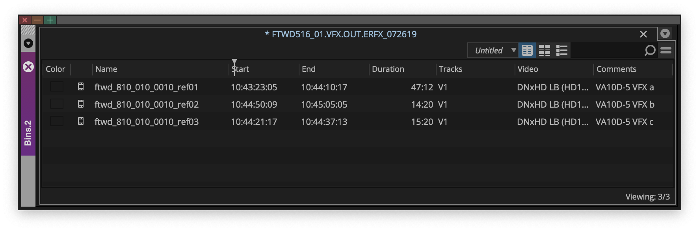
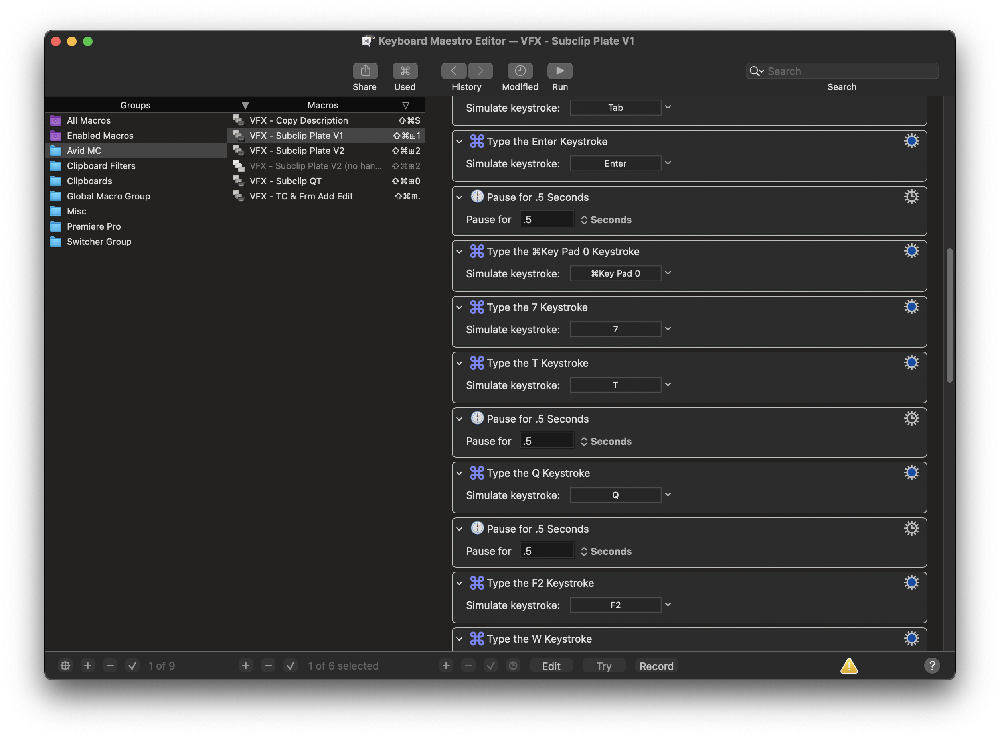
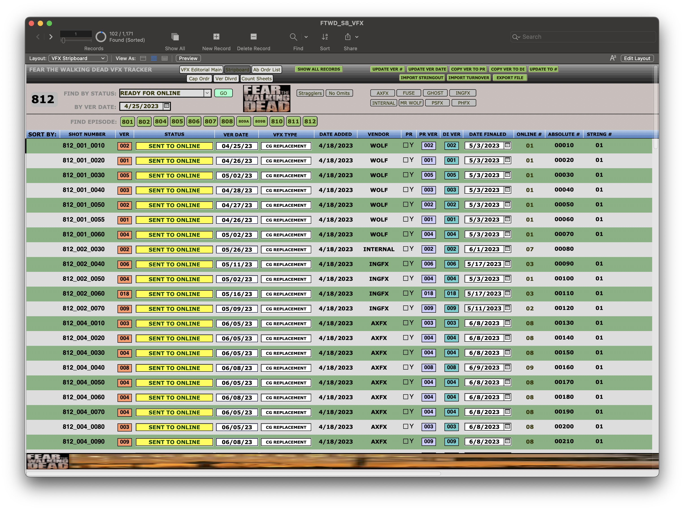
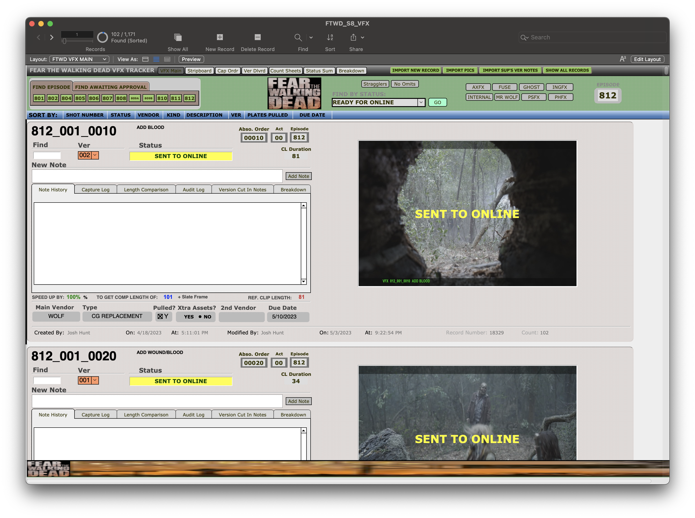

Josh Hunt - Project Case Study
**Project Title:** VFX Shot Delivery Workflow (Fear The Walking Dead)
**Role:** Assistant Visual Effects Editor
**Company/Client:** AMC Networks
**Dates:** December 2015 - June 2023
**Project Type:** High-Volume Television Series
1. Project Overview & Context
Summary: Fear The Walking Dead is a high-volume television series with extensive visual effects. The process of delivering VFX can quickly become unmanageable if not addressed with a robust system from the outset.
Overall Contribution: I joined the crew at the beginning of Season 2, when the team was overwhelmed by the sheer volume and complexity of VFX tracking. They quickly realized the critical need for a dedicated role to manage this. I then spent the next 7 seasons with the series until its completion, establishing and maintaining a highly efficient and meticulous VFX shot delivery workflow that became indispensable to the production.
View Trailer: See the final from the series with the Fear The Walking Dead Season 8 Trailer on YouTube.
2. My Role
Specific Responsibilities:
My workflow for Fear The Walking Dead was designed to ensure precise and timely delivery of VFX elements to vendors and back to editorial. While some tasks, like initial shot identification, could happen early due to vendor complexity, my general process was as follows:
- Waited for most editorial decisions to be made and watched the Producer's Cut to get a rough estimate of the number of VFX shots.
- Upon release of the Network Cut, I would meticulously scrub through the episode, adding identifying markers and on-screen banners with unique shot numbers (corresponding to episode and scene) and a brief description of the required work to each shot needing VFX.
- Exported a detailed list and images of each identified shot for the VFX Producer and VFX Coordinator, creating a crucial safety net of redundancy for tracking.
- Scrubbed through the episode again after picture lock to catch any last-minute changes or additions.
- Met with the editor and other producers to spot for specific requests, creative notes, and nuances for each VFX shot.
- Created precise video clips of each scene requiring VFX, specifically tailored for vendor bidding. This often involved breaking up elements and creating several clips of the same shot (e.g., showing both sides of a split screen) to provide vendors with all necessary context.
- Once bids were approved and budgets confirmed, the VFX Producer would assign shots to specific vendors, guiding my next steps. (Budget re-evaluations were rare, but I participated in discussions to find corners to cut if needed).
- Plate Pulling & Organization:
- Pulled raw footage (plates) by creating sub-clips with one-second handles.
- Renamed each sub-clip as an individual element matching the VFX shot number. If multiple clips were part of one shot (e.g., green screen elements), each was given a sub-identifying tag (e.g., `el01a`, `bg02b`).
- Searched for and included extra elements shot on set, such as color charts and chrome balls (essential for lighting matching), renaming them to match the shot number and tagging them as references.
- Added extensive metadata in the Avid bin, providing detailed descriptions of each shot and other useful comments. This task, while often tedious, was significantly streamlined using Keyboard Maestro, a macro programmer for automation.
- Sent all prepared plates to the online facility, where master raw camera files were stored. The facility would then create sub-clips of the high-resolution raw files based on my Avid bin, sending them to vendors along with camera reports and other set information (e.g., LIDAR scans).
- Created a text file of the bins and imported all tracking information into FileMaker, my primary database for tracking VFX shots.
- As shots trickled in from vendors, I imported each version into Avid, placed them on the timeline, and exported the bin with each new version into the FileMaker database.
- Collaborated with producers for review and approval, continuously updating shot statuses in the database until final approval.
- Finally, every completed and approved shot was sent in a bin to the online facility to be assembled for final color correction.

A bin of subclips to be sent to a vendor.

A macro I created to help with the repetitive task of subclipping.
3. Process & Challenges
Workflow Description: My process was a systematic and highly detailed daily routine of ingesting, verifying, organizing, and preparing raw media and VFX elements for editorial. While appearing simple once mastered, it demanded extreme care and organization to prevent costly errors and maintain project momentum.
Challenges Faced:
- Challenge 1: Overwhelmed Production & Initial Lack of System: Joining a production that was overwhelmed by VFX tracking, realizing the need for dedicated support only after the issue became unsustainable.
- Solution: Rapidly established myself as the central hub for VFX data flow, implementing a comprehensive, systematic workflow from scratch that became indispensable for managing the high volume of shots over 7 seasons.
- Challenge 2: High Volume, Complexity & Data Integrity: Managing a continuous stream of thousands of dailies and VFX iterations, requiring absolute precision to ensure no media or metadata was lost or misfiled across multiple departments and external vendors.
- Solution: Implemented rigorous cross-referencing protocols with all production notes and a methodical bin/folder organization system, creating multiple checkpoints for data verification and maintaining 100% data integrity.
- Challenge 3: Tedious & Repetitive Tasks: The highly repetitive and detail-intensive nature of tasks like plate pulling, renaming, and metadata entry, prone to human error.
- Solution: Leveraged automation tools like Keyboard Maestro to create macros, significantly speeding up tedious processes, reducing errors, and freeing up time for more critical tasks.


The final FileMaker database for Fear The Walking Dead.
4. Impact & Outcome
Key Results:
- Provided critical, long-term support for 7 seasons of Fear The Walking Dead, becoming an indispensable part of the post-production team for a high-volume series.
- Ensured 100% data integrity and accountability for all incoming dailies and VFX elements throughout the series' run.
- Significantly streamlined the VFX workflow by delivering meticulously organized and pre-prepped media, allowing editors and producers to focus more on creative decisions.
- Prevented potential costly delays and errors by proactively identifying and resolving media discrepancies and workflow bottlenecks.
- Contributed directly to the efficient and timely delivery of numerous episodes by maintaining a robust and reliable media management system.
Overall Learning/Growth: This project profoundly deepened my expertise in large-scale media asset management, data integrity protocols, and the critical role of meticulous organization in high-volume, fast-paced television post-production environments. It reinforced the importance of proactive problem-solving and attention to detail in maintaining a smooth workflow. My long-term involvement also allowed me to continuously refine my inherited FileMaker database (originally from Knight Rider in 2008), integrating new tools like conditional formatting to color-code statuses and elements for quick visual identification and uniformity with Avid timelines, greatly enhancing efficiency and clarity. I was also fortunate to collaborate with the best post crew in Hollywood. Over 7 seasons, we became a well-oiled machine and a true work family.